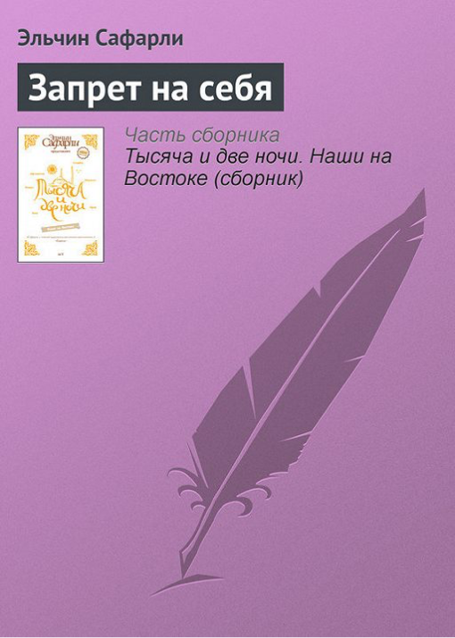

Не все люди
Вовсе не все люди в состоянии построить сами свою судьбу так, как им хочется. Это было бы слишком просто, если бы все нажимали кнопку: «Хочу интересную и приятную судьбу» и получали бы ее, сахарным сиропом политую.
Не у всех одинаковые стартовые данные, ни у всех были хорошие семьи, не все верят в себя, идут напролом. Если одним победа дается, хоть и с трудом, то других она просто обходит стороной. Просто у всех разная судьба. Но в любом случае каждый должен до последнего быть на плаву. Ради себя, прежде всего!
Все зависит от отношения к ситуации: кто-то скажет, что ему вообще не везет, все рушится и поставит на себе крест, а другой поймет, что, значит, не туда идет, что есть другие дороги и надо наслаждаться тем, что есть, пробовать, не бояться, да, поныть иногда, но утром проснуться и шагать дальше.
Правил не существует
Чего бы это ни стоило – никогда не поздно, никогда не рано стать тем, кем ты хочешь стать. Временных рамок нет, можешь начать когда угодно. Можешь измениться или остаться прежним – правил не существует.
Место в жизни
Любишь жизнь и одновременно понимаешь, что найти свое истинное место в ней – самая сложная задача бытия. «Место в жизни» – это не любовь или карьера. Это нечто большее, внутреннее, очень свое. Это когда смотришь на небо и понимаешь, что под одним из облаков твое место, пусть маленькое, но твое…